Real production HTTPS captures from https://market.twich.gg on 2026-11-15 after deployment of 7202e07. America/Denver browser timezone; trusted TLS, no certificate bypass, real production observations (synthetic=false). Temporary audited accounts were disabled and credentials revoked. The final compact/sole-variant/chart captures supplement the complete 15:05:55 UTC acceptance run at 15:13:20 UTC. Original before/after fixtures remain in ../everyday-polish/review.html and are explicitly isolated test data.
Release report · Original before/after review gallery
Completed first page with a compact toolbar and 620px internal viewport.
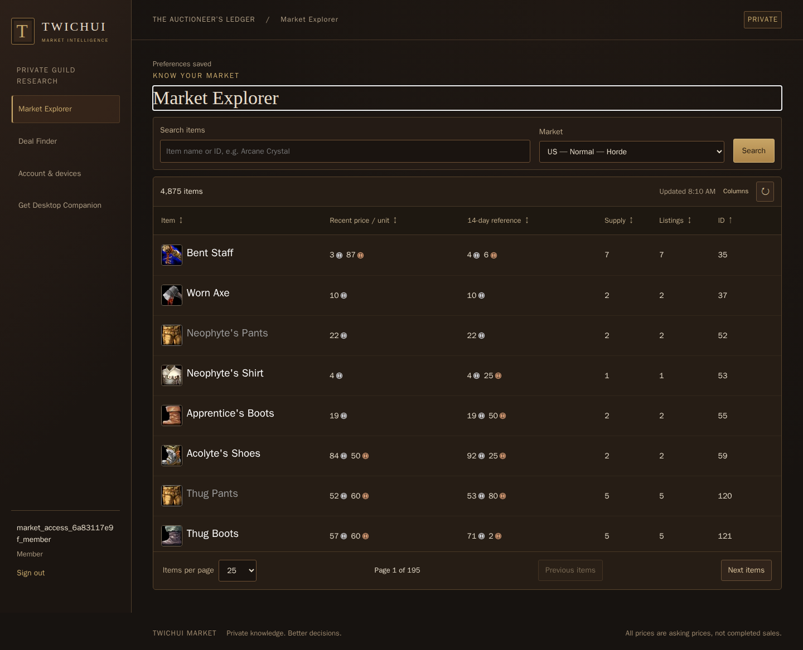
Actual request postponed by 1,200ms; old rows remain, height stays 620px, footer movement is 0px.
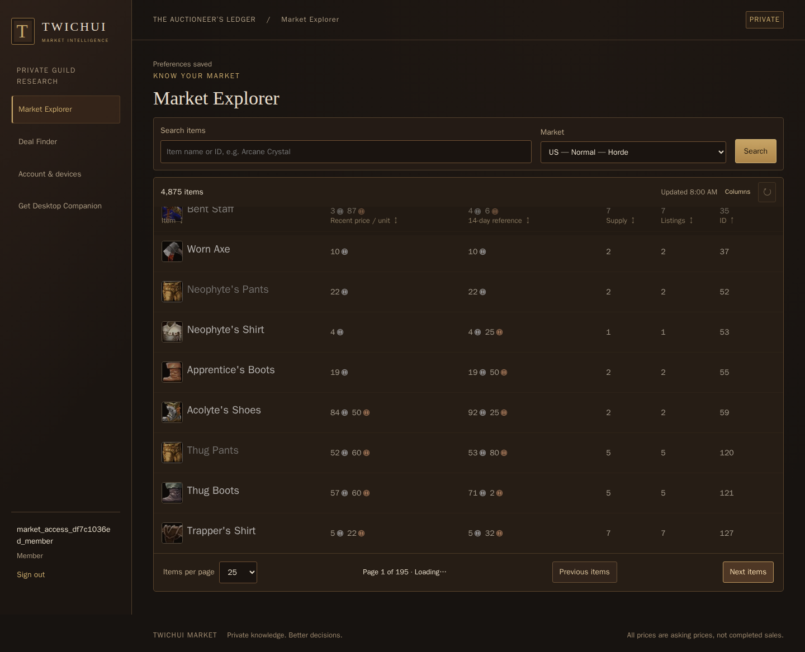
Destiny item 647: far-right chevron expands the existing exact-variant table.
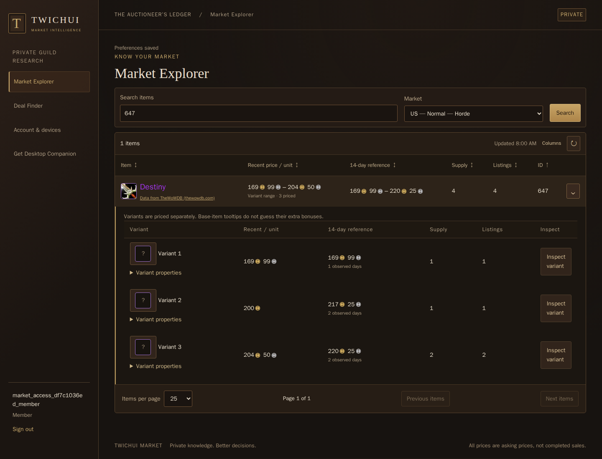
Bent Staff item 35 resolves directly to its sole verified variant. Real local charts and asking listings.
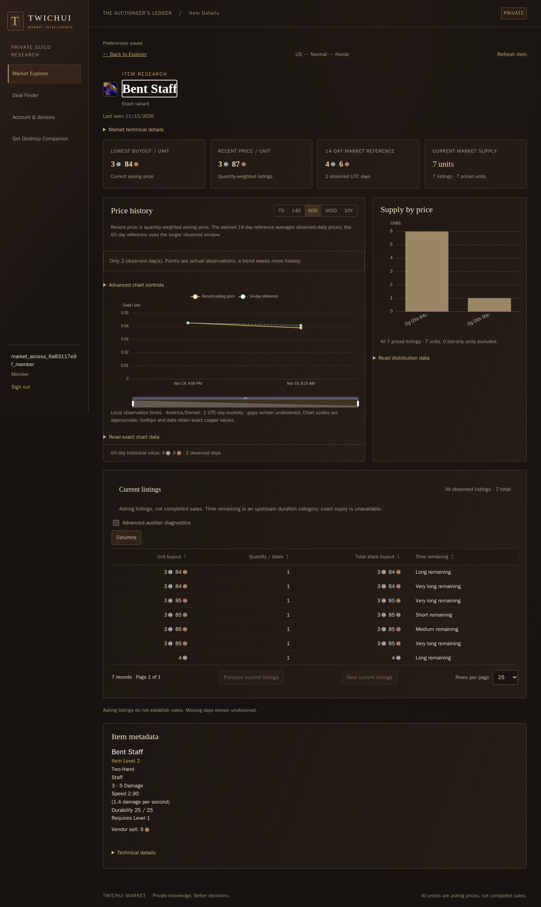
An exact Destiny variant with a compact optional selector and linked TheWoWDB attribution.
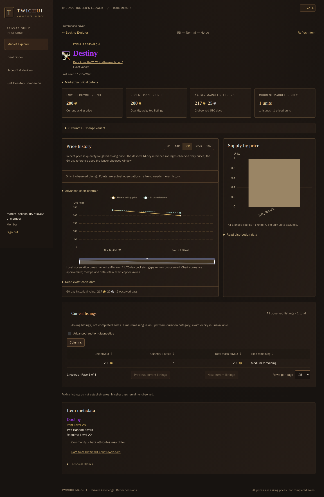
Player attributes first; Technical details stays collapsed.
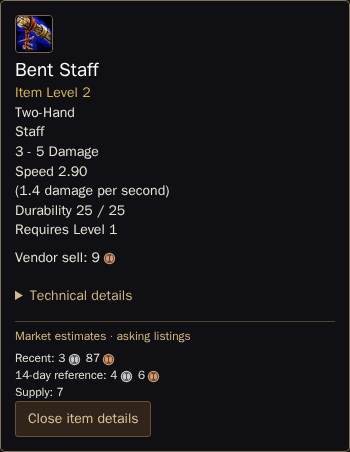
Expanded provenance retains provider/build/field details in a bounded scrolling popup.
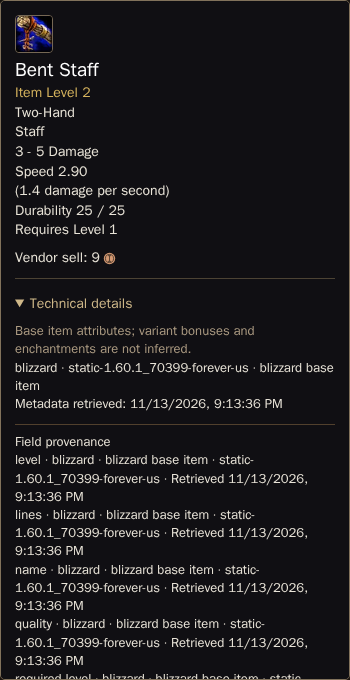
America/Denver observation labels; server daily aggregation remains UTC-based.
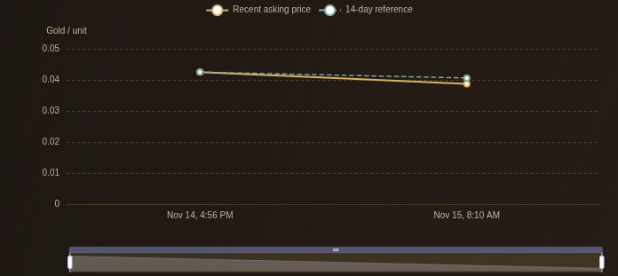
Actual all-market results, local timestamps, honest historical delta limitations and expanded diagnostics.
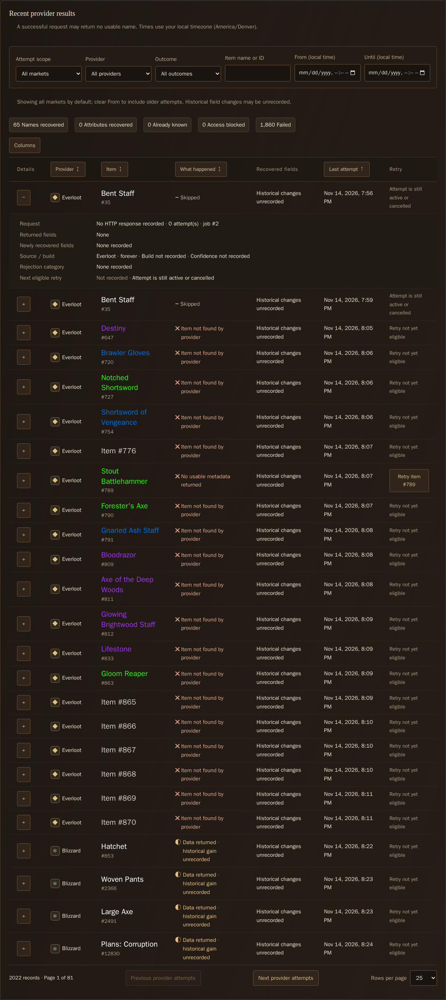
Linked actual source credit remains visible on the item page.
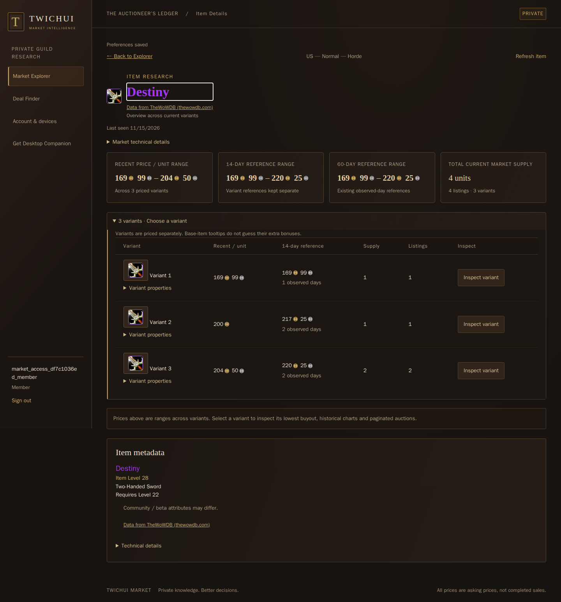
390px viewport; document does not overflow. The current-listing table retains internal horizontal scrolling.
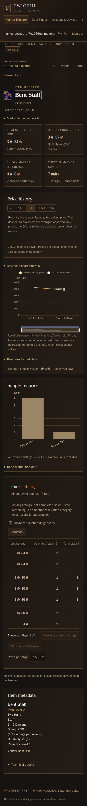
The original signed private beta bytes and integrity details; no new desktop release.
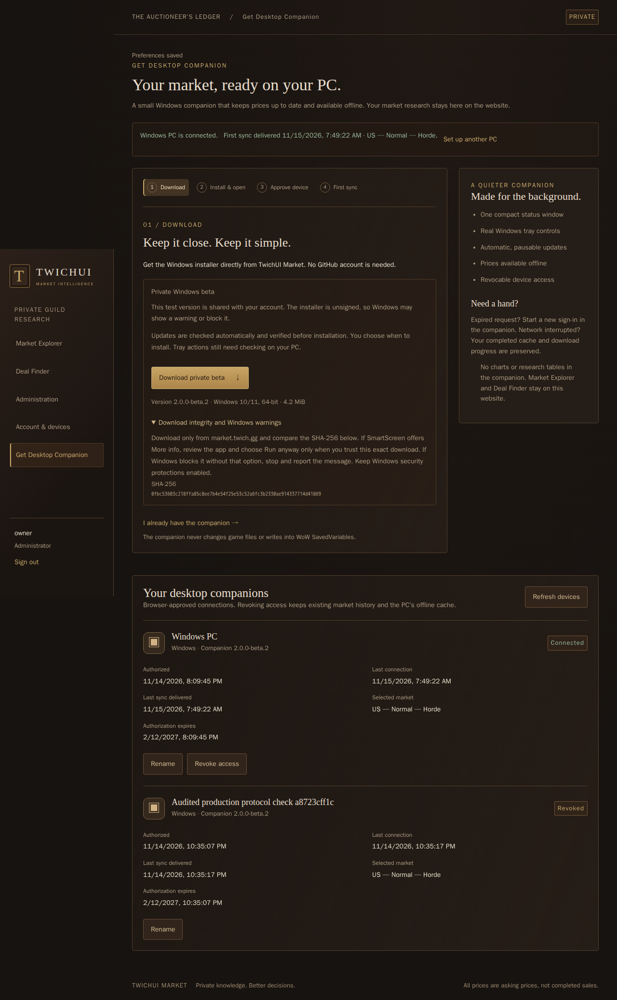